Set Up Project
Setting Up Your First Project
This page will take you through setting up a project in Unity for the first time. You will install the Unity Editor, which is what you will be using to add elements to your game. You will also create a new game project and add a player character and a floor to your game.
Install the Editor
The Unity Editor is where you will assemble your game. This tutorial will use Unity 6.3 LTS (6000.3.12f1), but this should work on any version of Unity 6+.
-
Open the Unity app.
-
Navigate to the Installs tab on the left side.
-
Click Install Editor on the right side.
-
Install Unity 6.3 LTS under the tab Official Releases.
Version
Any official release of Unity 6 will work. The Unity Hub will recommend version 6.4 (6000.4.1f1), but this tutorial will use Unity 6.3 LTS (6000.3.12f1) since it is more stable and will be supported for longer.
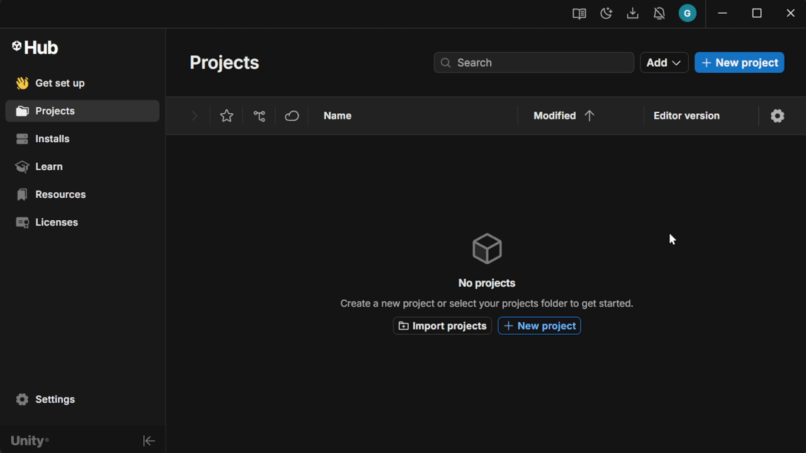
The program will ask you what modules you would like to have installed with the Unity editor.
-
Ensure the Microsoft Visual Studio Community 2022 box is checked.
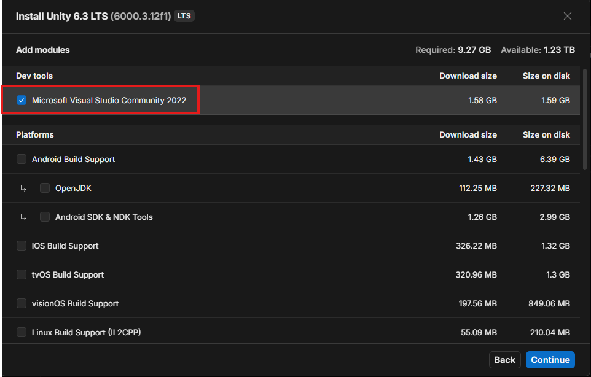
Every other checkbox that is not mentioned can be left untouched.
-
Click Continue.
-
Wait for Visual Studio to ask which Workloads you want to install with it.
-
Scroll down and ensure that Game Development with Unity addon is checked under the Workloads tab.
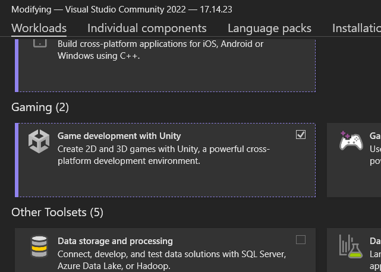
-
Press the install button.
-
Wait for Editor and Visual Studio downloads to complete.
Success
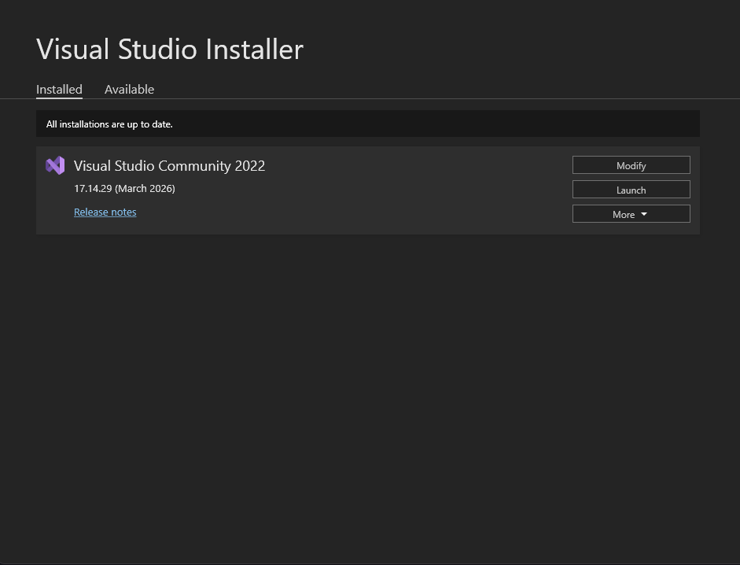
-
Close the Visual Studio Installer window.
Since you already have Visual Studio 2022 installed, Unity will not install it for you. However, you must check if you have the Game Development with Unity workload installed. This is an essential addon that will let help you debug and test your game code.
-
Open the Visual Studio Installer.
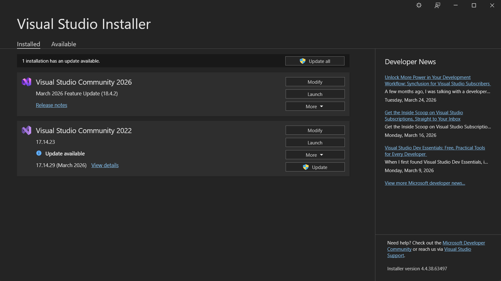
-
Click Modify for Visual Studio Community 2022.
-
Scroll down and ensure the Game Development with Unity workload checkbox is checked.
-
If you had to check the checkbox, press Modify.
-
After the changes apply, close Visual Studio.
Success
When the install completes, you should see the editor in the Installs tab.
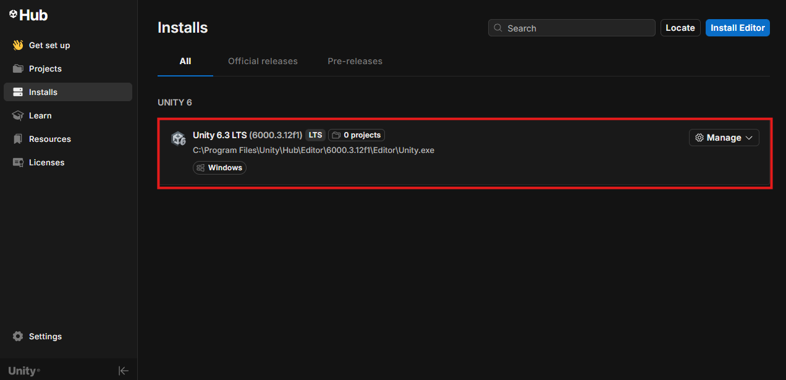
Create a Project
Great! Now that you have the Editor and Visual Studio installed, we can begin creating your first Unity project which will be a simple platform game.
-
Go to the Projects tab on the left side of your Unity Hub window.
-
Click +New Project.
-
Select the Universal 2D Core Template under the Core tab.
-
Name your project.
-
Choose project location.
-
Click +Create Project.
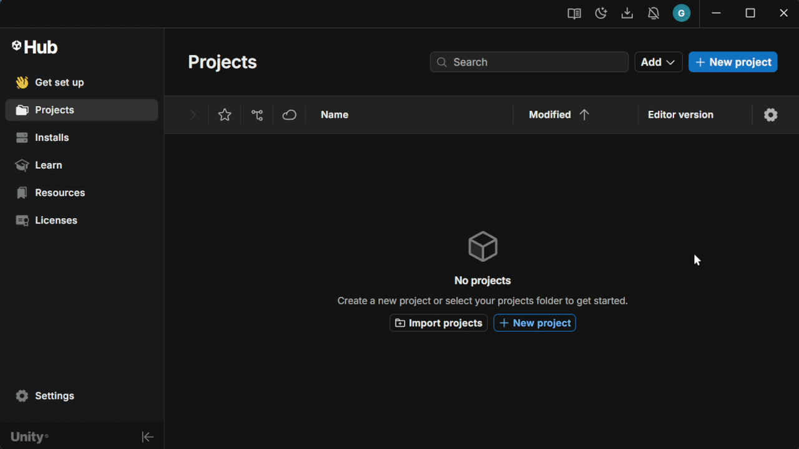
Success
You should now see the Unity Editor creating your project.
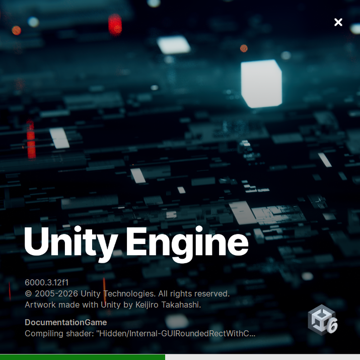
Once it loads, you will see the Unity Editor open up.
Success
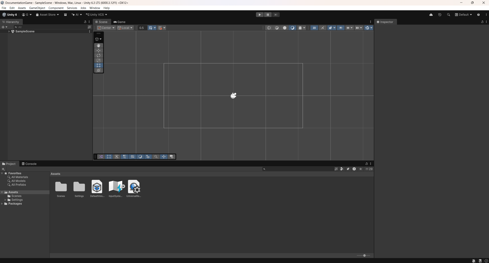
Enabling the Legacy Input System
There is one more thing we need to do before adding anything. We will activate the legacy input system.
Warning
The legacy input system is easier to use for beginners, but it will be deprecated in future versions. Once you get more comfortable with the engine, switching to the new input system is strongly recommended.
-
In the menu bar, select Project Settings.
Edit > Project Settings
-
Search for "Input" using the searchbar in the top-right corner of Project Settings.
-
In the left-hand sidebar of the Project Settings window, select the Player category.
-
Scroll down and open the Other Settings dropdown.
-
Scroll down to the Other Settings section to find the section labeled as Active Input Handling.
-
Look for the Configuration subheading to find the Active Input Handling dropdown menu.
-
Click the dropdown and select Both.
Unity will prompt you to restart the editor to apply these changes.
-
Click Apply to restart the editor.
Create the Player and Floor
Now we can start adding objects. This section will guide you through shapes to your game. You will add 2 squares, one representing the player, and another representing the floor. Ensure that the editor is on the Scene view instead of the Game view. We will start with the player first.
Player
-
Add a square sprite to the scene from the Hierarchy tab's + button:
2D Objects > Sprites > Square
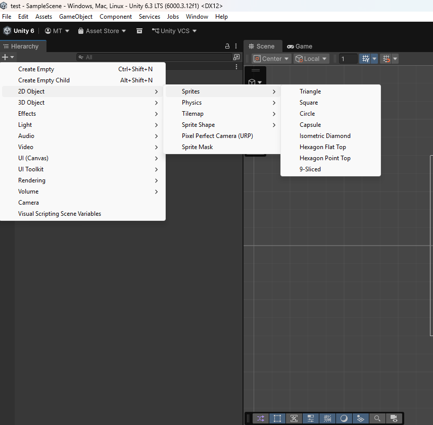
-
Rename the square to "Player" in the Inspector tab on the right.
-
Change the sprite's color to red in the Inspector tab.
Success
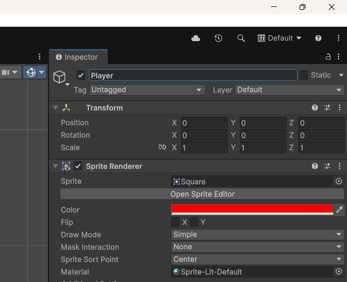
-
Add another square sprite to the scene.
Floor
Now that we have a player character, we will add a floor for them to stand on.
-
Add another square sprite to the scene.
2D Objects > Sprites > Square
-
Name the second sprite "Floor" in the Inspector tab.
-
In the scene view, stretch it using your cursor into a rectangle shape.
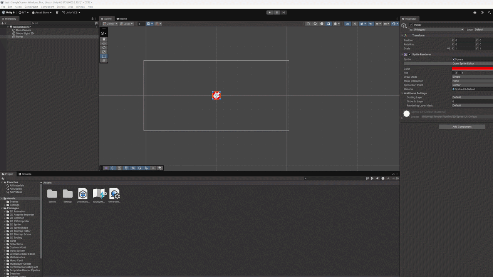
Success
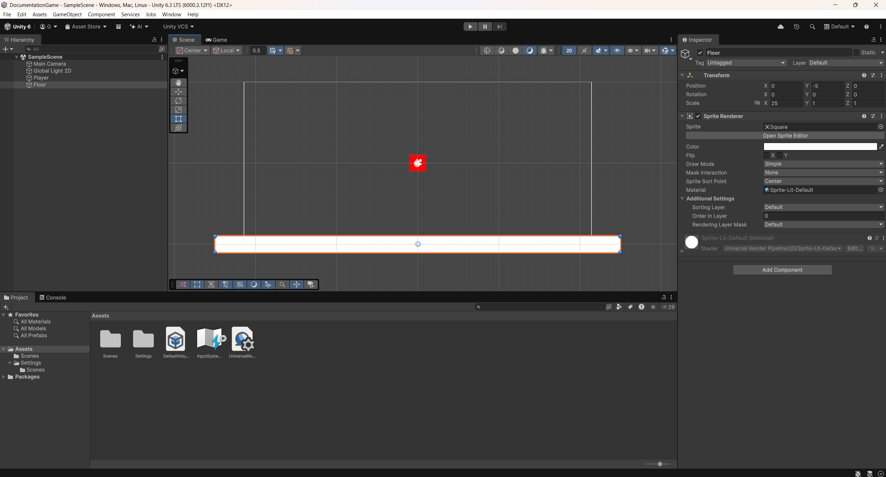